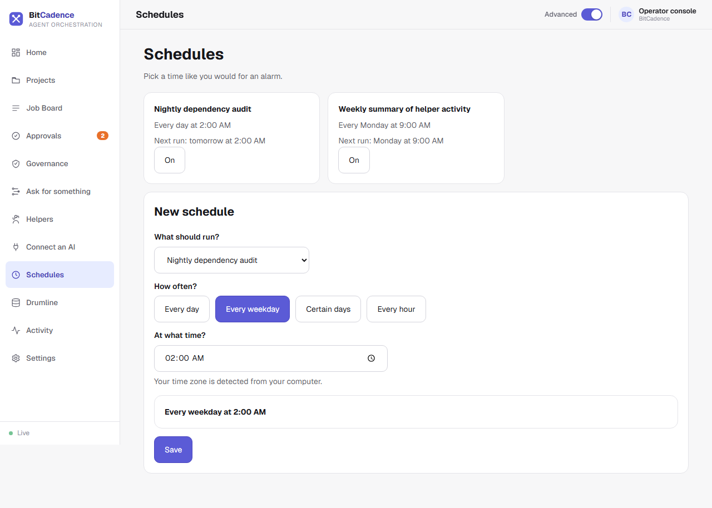

Scheduling & Recurring Loops
Goal
Automate recurring helper tasks on timers, cron schedules, or bounded iteration loops, ensuring all periodic runs inherit full governance, approval gates, and audit trails.
Step-by-Step Instructions
The easy way: the Schedules page
In the console, click Schedules. Each saved schedule is a card with its name, when it runs (for example Every day at 2:00 AM), the next run, and an On switch. To add one, use New schedule: choose what should run, how often (Every day, Every weekday, Certain days or Every hour) and the time. The sentence at the bottom shows exactly what you are saving. See Schedules. To make something repeat straight from a request, use Make it repeat on Ask for something.

The current form also exposes Time zone (IANA), initially detected from the browser. Review the validated zone and next date/time/offset before Save. Invalid/stale previews disable saving. Existing schedules and legacy CLI/Ask-repeat defaults are not migrated; inspect their stored server-default zone separately.
The rest of this page covers the file behind it, for launchers, cron and loops.
1. Initialize Scheduling Configuration
Generate the default schedules file in your user home:
mco schedule init
This creates ~/.mco/schedules.yaml.
2. Configure Launchers and Loops
Open ~/.mco/schedules.yaml in your text editor:
# Reusable launch templates
launchers:
nightly-audit:
role: reviewer
title: Nightly dependency vulnerability audit
instructions: Scan dependency lockfiles for known CVEs.
requires_approval: false
max_retries: 2
escalate_to_role: human
release-check:
workflow: workflows/release-pipeline.yaml
# Timing and trigger loops
schedules:
audit-cron:
launcher: nightly-audit
cron: "0 2 * * *" # Runs every night at 02:00 UTC
enabled: true
health-pulse:
launcher: nightly-audit
interval_seconds: 3600 # Runs every hour
max_iterations: 24 # Bounded loop: stops after 24 runs
enabled: true
3. Inspecting and Testing Schedules
- List all active schedules and their next fire timestamps:
mco schedule list - Test-fire a launcher manually to verify the prompt without waiting for cron:
mco launch nightly-audit - Run a dry run to simulate the next tick:
mco schedule tick --dry-run
4. Running the Scheduler Engine
Run the scheduler in the foreground:
mco schedule run
Or install it as a persistent OS service:
mco service install-scheduler
The CLI Equivalent
Manage individual scheduled loops without rewriting YAML:
# Disable a schedule temporarily
mco schedule disable audit-cron
# Re-enable a paused schedule
mco schedule enable audit-cron
# Reset iteration history for a completed loop
mco schedule reset health-pulse
What You'll See
- Governed Origin Stamps: When a scheduled job is created on the Job Board, its metadata contains:
Origin: loop: audit-cron #12 - Audit Trails: You can look back months later and see exactly which schedule authorized each job, which helper leased it, and what was produced.
If It Goes Wrong
1. "Invalid cron expression"
- Cause: Non-standard cron syntax.
- Fix: Use standard 5-part cron syntax (
minute hour day month day-of-week).
2. "Schedule marked completed and stops running"
- Cause: The schedule reached its configured
max_iterationslimit. - Fix: Run
mco schedule reset <name>to clear the iteration counter, or removemax_iterationsfor infinite execution.